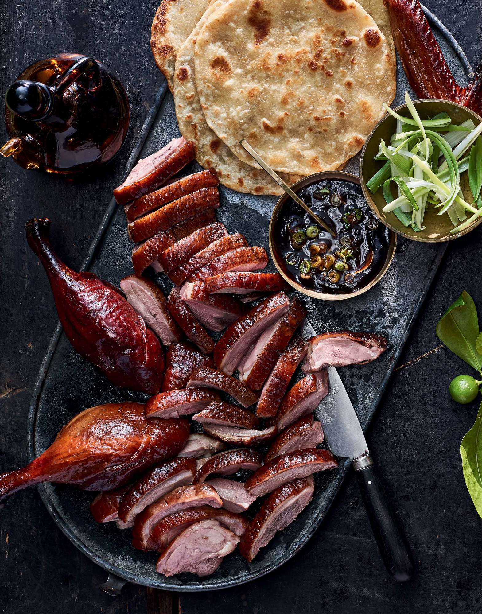
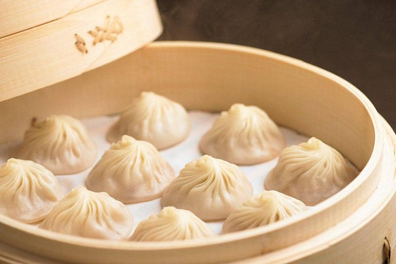

Chinese Cuisine
Discover some of the most iconic and beloved dishes in Chinese culinary tradition.

Peking Duck
Crispy-skinned roast duck served with thin pancakes, scallions, and sweet bean sauce. A Beijing specialty.

Mapo Tofu
A fiery Sichuan dish made with tofu, minced pork, chili bean paste, and numbing Sichuan peppercorns.

Xiaolongbao
Delicate soup dumplings from Shanghai, filled with pork and hot savory broth that bursts with flavor.
Kung Pao Chicken
A stir-fry of diced chicken, peanuts, and chili peppers, balancing savory, sweet, and spicy flavors.